貝氏網路 (Bayisian Network)
貝氏定理 (Bayes Theorem)
- 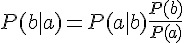
- 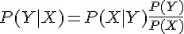
- 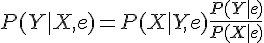
原始貝氏模型 (Naive Bayes)
原始貝氏模型 (Naive Bayes, 又被稱為簡單貝氏模型 (Naive Bayes Model) 或原始貝氏分類器 Naive Bayesian Classifier)
給定隨機變數 Z 後，X 與 Y 條件獨立的定義為
公式： 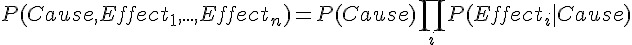
範例：牙痛問題
範例： 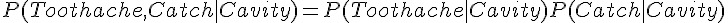
本問題來自人工智慧的經典教科書 「Artificial Intelligence: A Modern Approach」第三版，475 頁。
問題描述：當病人來看牙醫時，該病人可能有蛀牙或沒蛀牙，也可能有牙痛或沒有牙痛，而牙醫可能會找到牙痛的原因或找不到。
因此有下列三個隨機變數
X:(蛀) 蛀牙與否 (Cavity) Y:(痛) 牙痛與否 (Toothache) Z:(找) 是否找到痛的牙 (Catch)
假如這個問題個統計機率都已經知道了，如下表所示。
| 牙痛 (Y=1) | 不牙痛 (Y=0) | |||
|---|---|---|---|---|
| 找到 (Z=1) | 找不到 (Z=0) | 找到 (Z=1) | 找不到 (Z=0) | |
| 蛀牙(X=1) | 0.108 | 0.012 | 0.072 | 0.008 |
| 沒蛀牙 (X=0) | 0.016 | 0.064 | 0.144 | 0.576 |
如果將這個表格寫成一整排，那麼將會以下列機率表格顯示。
| 蛀 X | 痛 Y | 找 Z | P(X,Y,Z) |
|---|---|---|---|
| 0 | 0 | 0 | 0.576 |
| 0 | 0 | 1 | 0.144 |
| 0 | 1 | 0 | 0.064 |
| 0 | 1 | 1 | 0.016 |
| 1 | 0 | 0 | 0.008 |
| 1 | 0 | 1 | 0.072 |
| 1 | 1 | 0 | 0.012 |
| 1 | 1 | 1 | 0.108 |
問題
習題1：請計算 P(沒痛) = P(Y=0) = ?
習題2：請計算 P(找到 | 牙痛) = ?
習題3：請問這是一個合理的機率分布嗎？
習題4：請計算 P(Z=1 | X=1) = ?
習題5：請計算 P(Z=1, Y=1) = ?
習題6：請計算 P(蛀 | 找到), P(蛀), P(找到), P(找到 | 蛀) ，然後驗證下列貝氏定理是否成立。
P(找到|蛀) = P(蛀|找到)
解答
由於 R 的 陣列是用以行為主的順序 (Column Major Order)，因此沒辦法直接與上列的表格對起來，請看下列檔案中的說明
http://cran.r-project.org/doc/manuals/R-lang.pdf
2.2.2 The dim attribute is used to implement arrays. The content of the array is stored in a vector in column-major order and the dim attribute is a vector of integers specifying the respective extents of the array. R ensures that the length of the vector is the product of the lengths of the dimensions. The length of one or more dimensions may be zero.
所以我們必須先將真值表改為以行為主的方式，改寫後如下表所示。
| 蛀 X | 痛 Y | 找 Z | P(X,Y,Z) |
|---|---|---|---|
| 0 | 0 | 0 | 0.576 |
| 1 | 0 | 0 | 0.008 |
| 0 | 1 | 0 | 0.064 |
| 1 | 1 | 0 | 0.012 |
| 0 | 0 | 1 | 0.144 |
| 1 | 0 | 1 | 0.072 |
| 0 | 1 | 1 | 0.016 |
| 1 | 1 | 1 | 0.108 |
而且 R 的陣列是從 1 開始算的，不像 C 語言是從 0 開始算的，因此還必須將上表修改如下：
| 蛀 X | 痛 Y | 找 Z | P(X,Y,Z) |
|---|---|---|---|
| 1 | 1 | 1 | 0.576 |
| 2 | 1 | 1 | 0.008 |
| 1 | 2 | 1 | 0.064 |
| 2 | 2 | 1 | 0.012 |
| 1 | 1 | 2 | 0.144 |
| 2 | 1 | 2 | 0.072 |
| 1 | 2 | 2 | 0.016 |
| 2 | 2 | 2 | 0.108 |
> p <- array(c(0.576, 0.008, 0.064, 0.012, 0.144, 0.072, 0.016, 0.108),c(2,2,2))
> p
, , 1
[,1] [,2]
[1,] 0.576 0.064
[2,] 0.008 0.012
, , 2
[,1] [,2]
[1,] 0.144 0.016
[2,] 0.072 0.108
> p[1,1,1]
[1] 0.576
> p[2,1,1]
[1] 0.008
> p[1,2,1]
[1] 0.064
> p[2,2,1]
[1] 0.012
> p[1,1,2]
[1] 0.144
> p[2,1,2]
[1] 0.072
> p[1,2,2]
[1] 0.016
> p[2,2,2]
[1] 0.108
> dimnames(p)[[1]] = c("沒蛀", "蛀")
> dimnames(p)[[2]] = c("沒痛", "痛")
> dimnames(p)[[3]] = c("沒找", "找")
> p
, , 沒找
沒痛 痛
沒蛀 0.576 0.064
蛀 0.008 0.012
, , 找
沒痛 痛
沒蛀 0.144 0.016
蛀 0.072 0.108解答1：P(沒痛) = 0.8 計算過程：
> p[,"沒痛",]
沒找 找
沒蛀 0.576 0.144
蛀 0.008 0.072
> sum(p[,"沒痛",])
[1] 0.8解答2：P(找到 | 牙痛) = 0.62
> p[,,"找"]
沒痛 痛
沒蛀 0.144 0.016
蛀 0.072 0.108
> sum(p[,,"找"])
[1] 0.34
> sum(p[,"痛","找"])
[1] 0.124
> sum(p[,"痛","找"])/sum(sum(p[,"痛",]))
[1] 0.62解答3：請問這是一個合理的機率分布嗎？ (是的，因為總和為 1，而且每個機率直都介於 0 到1之間)
> sum(p)
[1] 1
> 0<=p<=1
錯誤: unexpected '<=' in "0<=p<="
> 0<=p
, , 沒找
沒痛 痛
沒蛀 TRUE TRUE
蛀 TRUE TRUE
, , 找
沒痛 痛
沒蛀 TRUE TRUE
蛀 TRUE TRUE
> p<=1
, , 沒找
沒痛 痛
沒蛀 TRUE TRUE
蛀 TRUE TRUE
, , 找
沒痛 痛
沒蛀 TRUE TRUE
蛀 TRUE TRUE
> 0<=p & p <=1
, , 沒找
沒痛 痛
沒蛀 TRUE TRUE
蛀 TRUE TRUE
, , 找
沒痛 痛
沒蛀 TRUE TRUE
蛀 TRUE TRUE解答4：請計算 P(Z=1 | X=1) = 0.9
> sum(p[2,,2])/sum(p[2,,])
[1] 0.9解答5：請計算 P(Z=1, Y=1) = 0.124
> p[,2,2]
沒蛀 蛀
0.016 0.108
> sum(p[,2,2])
[1] 0.124解答6：請計算 P(蛀 | 找到), P(蛀), P(找到), P(找到 | 蛀) ，然後驗證下列貝氏定理是否成立。
P(蛀 | 找到) = p(找到|蛀) * p(蛀)/p(找到)
說明：
P(蛀 | 找到) = 0.5294118, P(蛀)=0.2, P(找到)=0.34, P(找到 | 蛀)=0.9
P(蛀 | 找到) = 0.5294118 = 0.9 * 0.2/0.34 = = p(找到|蛀) * p(蛀)/p(找到)
> pab = sum(p["蛀",,"找"])/sum(p[,,"找"]) ; pab = P(蛀 | 找到)
> pba = sum(p["蛀",,"找"])/sum(p["蛀",,]) ; pba = P(找到 | 蛀)
> pa = sum(p["蛀",,]) ; pa = P(蛀)
> pb = sum(p[,,"找"]) ; pb = P(找到)
> pab
[1] 0.5294118
> pba
[1] 0.9
> pa
[1] 0.2
> pb
[1] 0.34
> pba*pa/pb
[1] 0.5294118
> pab-pba*pa/pb
[1] 0
> 所以
p(蛀|找)
= sum(p["蛀",,"找"])/sum(p[,,"找"])
= pab
= pba * pa / pb
= p(找|蛀) * p(蛀)/p(找)
= sum(p["蛀",,"找"])/sum(p[,,"蛀"])* sum(p[,,"蛀"])/ sum(p["找",,])完整的操作過程
> p <- array(c(0.576, 0.008, 0.064, 0.012, 0.144, 0.072, 0.016, 0.108),c(2,2,2))
> p
, , 1
[,1] [,2]
[1,] 0.576 0.064
[2,] 0.008 0.012
, , 2
[,1] [,2]
[1,] 0.144 0.016
[2,] 0.072 0.108
> p[1,1,1]
[1] 0.576
> p[2,1,1]
[1] 0.008
> p[1,2,1]
[1] 0.064
> p[2,2,1]
[1] 0.012
> p[1,1,2]
[1] 0.144
> p[2,1,2]
[1] 0.072
> p[1,2,2]
[1] 0.016
> p[2,2,2]
[1] 0.108
> dimnames(p)[[1]] = c("沒蛀", "蛀")
> dimnames(p)[[2]] = c("沒痛", "痛")
> dimnames(p)[[3]] = c("沒找", "找")
> p
, , 沒找
沒痛 痛
沒蛀 0.576 0.064
蛀 0.008 0.012
, , 找
沒痛 痛
沒蛀 0.144 0.016
蛀 0.072 0.108
> p[,"沒痛",]
沒找 找
沒蛀 0.576 0.144
蛀 0.008 0.072
> sum(p[,"沒痛",])
[1] 0.8
> p[,,"找"]
沒痛 痛
沒蛀 0.144 0.016
蛀 0.072 0.108
> sum(p[,,"找"])
[1] 0.34
> sum(p[,"痛","找"])
[1] 0.124
> sum(p[,"痛","找"])/sum(sum(p[,"痛",]))
[1] 0.62
> sum(p)
[1] 1
> 0<=p<=1
錯誤: unexpected '<=' in "0<=p<="
> 0<=p
, , 沒找
沒痛 痛
沒蛀 TRUE TRUE
蛀 TRUE TRUE
, , 找
沒痛 痛
沒蛀 TRUE TRUE
蛀 TRUE TRUE
> p<=1
, , 沒找
沒痛 痛
沒蛀 TRUE TRUE
蛀 TRUE TRUE
, , 找
沒痛 痛
沒蛀 TRUE TRUE
蛀 TRUE TRUE
> 0<=p & p <=1
, , 沒找
沒痛 痛
沒蛀 TRUE TRUE
蛀 TRUE TRUE
, , 找
沒痛 痛
沒蛀 TRUE TRUE
蛀 TRUE TRUE
> sum(p[2,,2])/sum(p[2,,])
[1] 0.9
> p[,2,2]
沒蛀 蛀
0.016 0.108
> sum(p[,2,2])
[1] 0.124
> pab = sum(p["蛀",,"找"])/sum(p[,,"找"])
> pba = sum(p["蛀",,"找"])/sum(p["蛀",,])
> pa = sum(p["蛀",,])
> pb = sum(p[,,"找"])
> pab
[1] 0.5294118
> pba
[1] 0.9
> pa
[1] 0.2
> pb
[1] 0.34
> pba*pa/pb
[1] 0.5294118
> pab-pba*pa/pb
[1] 0
> 簡單貝氏模型
簡單貝氏模型直接假設所有的隨機變數之間具有條件獨立的情況，因此可以直接利用條件機率相乘的方法，計算出聯合機率分布。
public class NaiveBayesModel : ProbModel
{
public HashSet<Object> C = new HashSet<Object>();
public HashSet<Object> X = new HashSet<Object>();
public override double p(String exp)
{
if (exp.IndexOf("|") >= 0)
{
String[] x = exp.head("|").split(" ");
String c = exp.tail("|");
// p(x1 x2 ... xn | c) = p(x1|c) ... p(xn|c)
if (x.Length > 1 && X.containsAll(x) && C.Contains(c))
return this.ruleProd(x, c);
}
return base.p(exp);
}
}簡單貝氏模型的測試問題
問題：已知類別 C 決定隨機變數 X 的機率，類別 C 有 c1, c2 兩個可能值，X 也有 x1, x2 兩個可能值，但是不知 p(c1), p(x1|c1), p(x1|c2), 請問哪一種假設最符合觀察數據 x1 x2 ... xn，在此模型中，p(c2)=1-p(c1), p(x2|c1)=1-p(x1|c1), p(x2|c2)=1-p(x1,c2)，因此只有三個參數需要學習。
程式實作
public class NaiveBayesProblem1 : ProbProblem
{
public NaiveBayesProblem1()
{
d("c1", 0.3, "c2"); d("x1|c1", 0.7, "x2|c1"); d("x1|c2", 0.5, "x2|c2");
}
public override String generate()
{
String c = PR.randomSelect("c1", p("c1"), "c2");
String x = PR.randomSelect("x1", p("x1|" + c), "x2");
return c + "," + x;
}
public void test()
{
var model = new NaiveBayesModel();
model.C.addAll("c1,c2".split(",")); model.X.addAll("x1,x2".split(","));
test(model, "c1;c2;x1|c1;x2|c1;x1|c2;x2|c2;x1 x2 x1 x2|c1");
}
}貝氏網路 (Bayisian Network)
使用貝氏網路計算聯合機率分佈

使用貝氏網路計算事後機率分佈 P(X | e)
X:查詢變數 E 證據變數集 E1, E2, ... Em, e 代表一個觀察到的特定事件 Y 表示非證據變數集 Y1, Y2, ... Yl.
方法 1. 列舉式推理法 (Enumeration) (較慢)
方法 2. 變數消元演算法 (Variable Elimination Algorithm) (較快 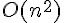 )
類似動態規畫，不需要重覆計算已知結果
方法 3. 聯合樹演算法 (Joint Tree Algorithm) (最快 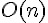 )
在貝氏網路中使用蒙地卡羅法
(1). 使用貝氏網路進行取樣
Algorithm Prior-Sample(bn) returns an event sampled from the prior specified by Bayes Network (bn)
input : bn, a Bayesian network specifying joint distribution [[  ]]
x = an event with n elements
for i=1 to n do
xi = a random sample from [[  ]]
return x(2). 直接取樣演算法 (Direct Sampling Method)
目標：計算出所有的 [[ 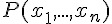 ]], 也就是 [[ 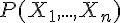 ]] * 步驟 1. 利用網路架構，從無父節點的變數開始，進行取樣動作，其方法是逐步利用 [[ 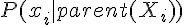 ]] 的取樣方式，完成一次取樣動作。 * 步驟 2. 重複 (步驟 1) ，總共取樣 N 次，然後就得到一系列的樣本 [[ 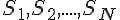 ]] * 步驟 3. 任一個樣本 [[ 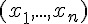 ]] 的出現機率即為 [[ 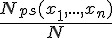 ]]
數學原理
Algorithm Direct-Sampling(X, bn, N)
input : X , the query variable
bn, a Bayesian network specifying joint distribution [[  ]]
N, the total number of samples to be generated
for i=1 to N do
x = Prior-Sampling(bn)
N[x] = N[x] + 1
return Normalize(N[X])(3). 拒絕取樣演算法 (Rejection Sampling)
目標：計算出符合證據 e 的所有機率分布 
Algorithm Rejection-Sampling(X, e, bn, N)
input : X , the query variable
e, evidence spedified as an event
bn, a Bayesian network specifying joint distribution [[  ]]
N, the total number of samples to be generated
for i=1 to N do
x = Prior-Sampling(bn)
if x is consistent with e then
N[x] = N[x] + 1 where x is the value of X in x
return Normalize(N[X])問題：當 e 事件的發生機率很小時，大部分 Prior-Sampling 的樣本都被拒絕了，因此可能會很浪費時間。
(4). 似然加權演算法 (Likelihood Weighting)
目標：計算出符合證據 e 的所有機率分布 [[ 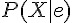 ]] 改進：只產生與 e 一致的事件
Algorithm Likelihood-Weighting(X, e, bn, N) returns an estimate of P(X|e)
input : X , the query variable
e, evidence spedified as an event
bn, a Bayesian network specifying joint distribution [[  ]]
N, the total number of samples to be generated
local variables : W, a vector of weighted counts over X, initially zero.
for j=1 to N do
x, w = Weighted-Sample(bn)
W[x] = W[x] + w; where x is the value of X in {x}
return Normalize(W[x])
Algorithm Weighted-Sample(bn, e) returns an event and a weight
x = an event with n elements; w=1;
for i = 1 to n do
if Xi has a value xi in e
then w = w * P(Xi=xi | parent(Xi))
else xi = a random sample from P(Xi | parents(Xi))
return x,w參考文獻
- 維基百科編者 (2010). 貝氏網路. Wikipedia, . Retrieved 08:58, 1月 11, 2010 from http://zh.wikipedia.org/w/index.php?title=%E8%B2%9D%E6%B0%8F%E7%B6%B2%E8%B7%AF&oldid=12052149.
- Stuart Russell and Peter Norvig, Artificial Intelligence: A Modern Approach, [1], Prentice Hall, 2nd ed., 2002. ISBN 0137903952.
- 人工智慧－現代方法(第二版), 譯者：高超群, 出版社：全華科技, 出版日期：2006年10月12日, 語言：繁體中文, ISBN：9861544038
using System;
using System.Collections.Generic;
using System.Linq;
using System.Text;
using ccc.set;
namespace ccc.probability
{
// 隨機源：貝氏網路 BNT 有 BEAJM 五個節點，其中 B=>A, E=>A, A=>J, A=>M 有連線，
// 節點的機率為 P(B)=0.001, P(E)=0.002，
// 連線的機率為 P(A|B,E)=0.95, P(A|B,-E)=0.94, P(A|-B,E)=0.29, P(A|-B,-E)=0.001
// P(J|A)=0.90, P(J|-A)=0.05, P(M|A)=0.70, P(M|-A)=0.01。
// 參考文獻：AIMA 教科書第二版, 圖 14.2。
public class BayesNetProblem1 : ProbProblem
{
public String vars = "B,E,A,J,M";
public Map<String, String> parents = new Map<String, String>();
public Map<String, String> values = new Map<String, String>();
public BayesNetProblem1()
{
parents["B"] = "";
parents["E"] = "";
parents["A"] = "B,E";
parents["J"] = "A";
parents["M"] = "A";
values["B"] = "b,-b";
values["E"] = "e,-e";
values["A"] = "a,-a";
values["J"] = "j,-j";
values["M"] = "m,-m";
prob("b", 0.001);
prob("e", 0.002);
prob("a|b,e", 0.95);
prob("a|b,-e", 0.94);
prob("a|-b,e", 0.29);
prob("a|-b,-e", 0.001);
prob("j|a", 0.90);
prob("j|-a", 0.05);
prob("m|a", 0.7);
prob("m|-a", 0.01);
}
public void prob(String exp, double p) { d(exp, p, "-" + exp); }
public override String generate()
{
String A,B,C,D,E;
A = PR.randomSelect("A", p("A"), "-A");
B = PR.randomSelect("B", p("B"), "-B");
C = PR.randomSelect("C", p(A)*p(B), "-C");
D = PR.randomSelect("D", p("D|" + C), "-D");
E = PR.randomSelect("E", p("D|" + C), "-E");
return A + "," + B + "," + C + "," + D + "," + E;
}
public void test()
{
var net = new BayesNetModel();
net.vars = vars; net.parents = parents; net.values = values; net.d = this;
ProbMap pb = net.enumerationAsk("B", "j,m");
pb.log();
}
}
public class BayesNetModel : ProbModel
{
public String vars;
public Map<String, String> parents, values;
public override double p(string exp)
{
try {
double prob = base.p(exp);
Log.log("p(" + exp + ") = " + prob);
return prob;
}
catch
{
Log.log("p(" + exp + ") = Error!");
throw new Exception();
}
}
public ProbMap enumerationAsk(String X, String e)
{
ProbMap px = new ProbMap();
String[] xvalues = values[X].split(",");
foreach (var x in xvalues)
px[x+"|"+e] = enumerateAll(vars, e+","+x);
return px.normalize();
}
public double enumerateAll(String vars, String e)
{
if (vars == "") return 1.0;
String Y = vars.head(",");
String rest = vars.tail(",");
String[] yvalues = values[Y].split(",");
IEnumerable<String> yset = e.split(",").Intersect(yvalues);
var y = yset.Count() > 0 ? yset.First() : null;
if (y != null)
return pcond(y, Y, e) * enumerateAll(rest, e);
else
{
double psum = 0.0;
foreach (var yi in yvalues)
{
psum += pcond(yi, Y, e) * enumerateAll(rest, e + "," + yi);
}
return psum;
}
}
public double pcond(String y, String Y, String e)
{
return p(y + "|" + bind(parents[Y], e));
}
public String bind(String pVars, String pValues)
{
if (pVars.Trim() == "") return "";
String[] vars = pVars.split(",");
String[] vals = pValues.split(",");
for (int i=0; i< vars.Length; i++)
{
var val = values[vars[i]].split(",").Intersect(vals);
if (val.Count() > 0)
vars[i] = val.First();
}
return vars.merge(',');
}
}
}